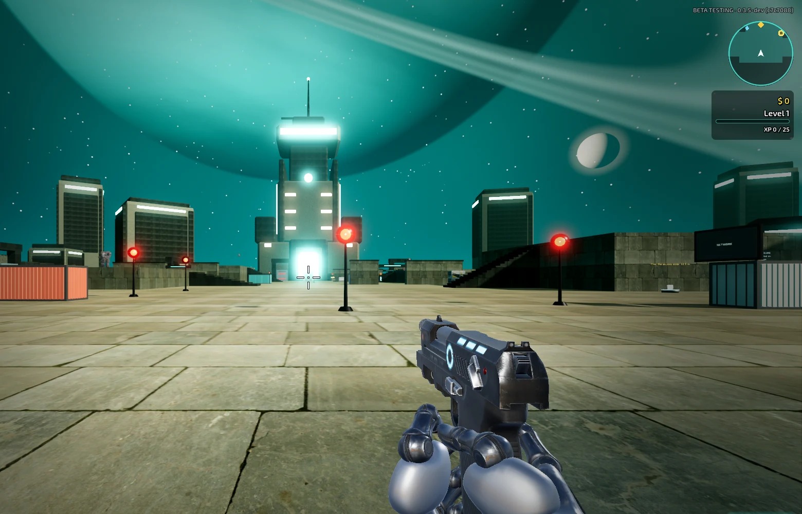
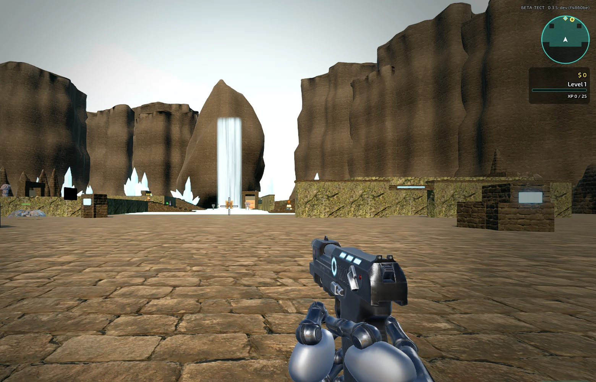

Devlog · our FPS
From staring at walls to actual targets 🎯


From staring at walls to actual targets
In the early stages of developing our FPS, we had a bit of a logic crisis. Our AI coding agents were so focused on making the enemies "behave" that they implemented a behavior where the enemies simply stayed back to remain calm.
This resulted in a gameplay loop that was—to put it politely—extremely intense. In reality, players were just standing around staring at walls for the first sixty seconds of every match. We call that a "meditative experience," but the players called it a bug.
To fix this, we've introduced some much-needed visibility and engagement. We added 3 to 5 red sensor eyes at every single spawn point to give you an immediate sense of direction. To keep the momentum going, we also scattered an additional 8 sensor eyes across each map.
As you can see in the screenshots, the environments are evolving from a low-poly teal cityscape to more rugged, natural landscapes like this rocky canyon with a waterfall. The gunplay is still being refined, but at least the targets are finally showing up for work.
Stay tuned as we continue to figure this out.
DeepSage #gamedev
Written with AI assistance. The pictures are real screenshots of the game in development.